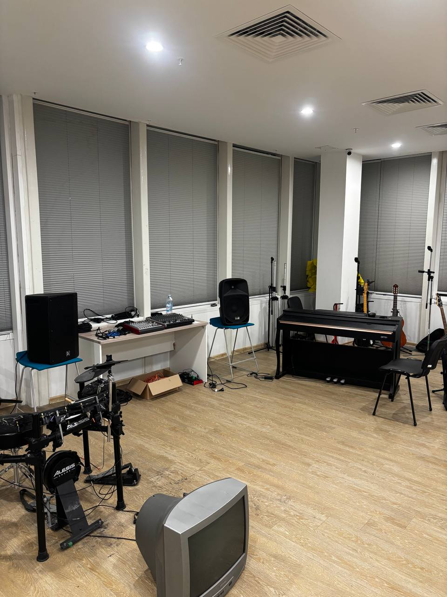
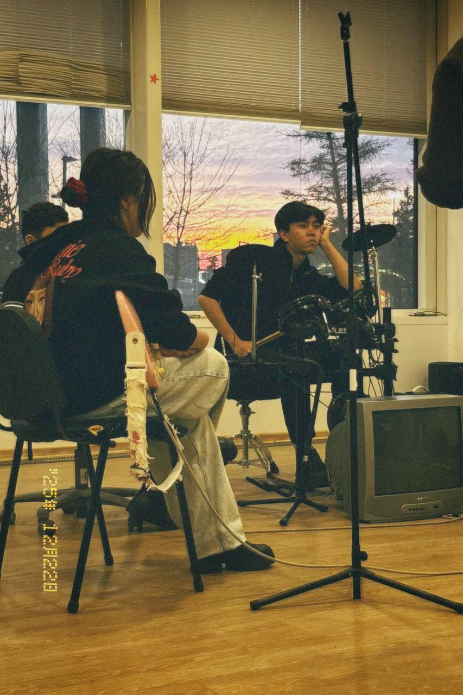

The Astana IT University Music Club brings together instrumentalists, vocalists,
and sound production enthusiasts from across all IT faculties.
Whether you prefer practicing high-energy rock rhythms at 180
BPM or recording delicate acoustic melodies,
our soundproof facility in Room C1.1.142 provides the instruments and monitors
necessary to advance your technical and performance abilities.
Throughout the academic semester, we organize collaborative jam sessions,
acoustic nights in the campus atrium, and studio workshops.
All registered members respect our core community philosophy:
Creativity flourishes only when every musician listens to others as attentively
as to themselves.
Our current season is marked as auditions open for rhythm guitarists,
bassists, and drummers.

Figure 1: Evening rehearsal and instrument soundcheck in Astana IT University
studio room C1.1.142.

Figure 2: Open acoustic jam session hosted for AITU applicants.
President's Welcome Address
“Музыка в универе — это не про академическую безупречность,
а про людей, которые находят свой голос и единомышленников среди пар
и бесконечных дедлайнов.”
— Акназар, President of AITU Music Club,
collected during interview in room C1.1.142 on September 10, 2024.
Studio Gear & Recruitment Process
We invite candidates across all university courses to take part in the
1st round of auditions.
Studio Gear Inventory
String Instruments
Fender Jazz Bass (4-string passive)
Yamaha Pacifica solid-body electric guitar
Takamine dreadnought acoustic guitar
Rhythm Section and Keyboards
Roland V-Drums electric mesh kit
Yamaha digital stage piano with weighted hammer action
Audition Procedure
Submit the digital registration form provided below.
Attend an assigned 15-minute live soundcheck in room C1.1.142.
Perform one solo piece and participate in an unscripted
10-minute improvisation session.
Essential Musical Terms
Jam Session
An informal musical gathering where players improvise arrangements
collaboratively without pre-written score sheets.
Soundcheck
The procedure of balancing monitor mixes and instrument levels prior
to rehearsals or stage presentations.
Stage Rider
A formal technical specification listing microphones, channels,
and electrical gear required by an ensemble.
Weekly Rehearsal Hall Allocation
Weekly schedule for Studio Room C1.1.142
Weekday
Time Slot
Registered Band
Genre Focus
Monday
17:00 – 19:00
AITU Acoustic Band
Indie Folk
Wednesday
18:30 – 20:30
Overdrive Collective
Alternative Rock
Friday
16:00 – 18:00
Astana IT Jazz Project
Bossa Nova & Swing
Audition & Membership Application
Physical Address: Astana IT University, EXPO Business Center,
Block C1, Room C1.1.142.
For room bookings and key clearance, contact club administration.